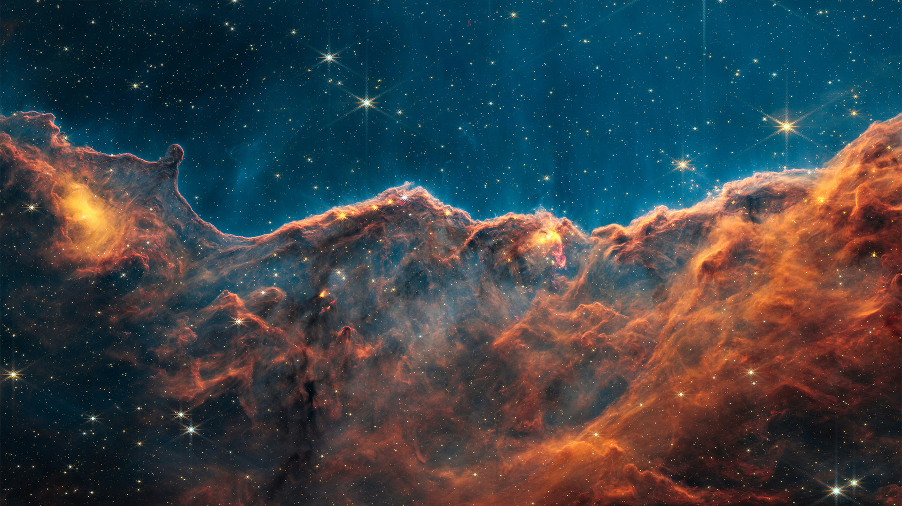

The Future of Space Exploration
Discovering new worlds and preparing for the next generation of space travel.
Where Will We Go Next?
The future of space exploration is full of exciting possibilities. Scientists and astronauts are working toward returning humans to the Moon, exploring Mars, and learning more about distant planets. New technology will help us travel farther into space and discover things we have never seen before.
The Next Steps in Space Exploration
Space exploration is changing as scientists develop better rockets, spacecraft, and technology. NASA's Artemis program is working to send astronauts back to the Moon and prepare for future missions to Mars. The Moon could become an important place to practice living and working away from Earth before longer trips into space.
Scientists are also sending robotic spacecraft to explore planets, moons, and asteroids. These missions help us learn about our solar system without putting astronauts in danger. Each new discovery gives scientists more information about what might be possible in the future.
Traveling to Mars
Mars is one of the biggest goals for future human space exploration. Scientists are studying the planet to learn whether humans could one day live and work there. Mars has a rocky surface, seasons, and signs that water existed there in the past.
Traveling to Mars would be difficult because the journey could take several months. Astronauts would need enough food, water, oxygen, and supplies to survive. They would also need protection from radiation and the extreme temperatures.
Before humans travel to Mars, scientists will need to test new equipment and learn how people can stay healthy during long space missions.
NASA Astronaut Training Facilities
- Johnson Space Center: Houston, Texas
- Neutral Buoyancy Laboratory: Houston, Texas
- Kennedy Space Center: Merritt Island, Florida
- Space Vehicle Mockup Facility: Houston, Texas
- Marshall Space Flight Center: Huntsville, Alabama